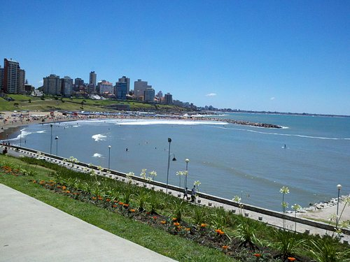
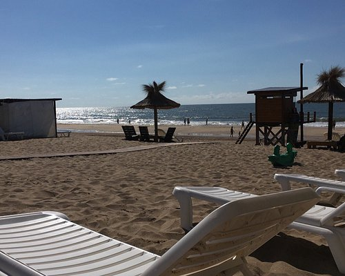
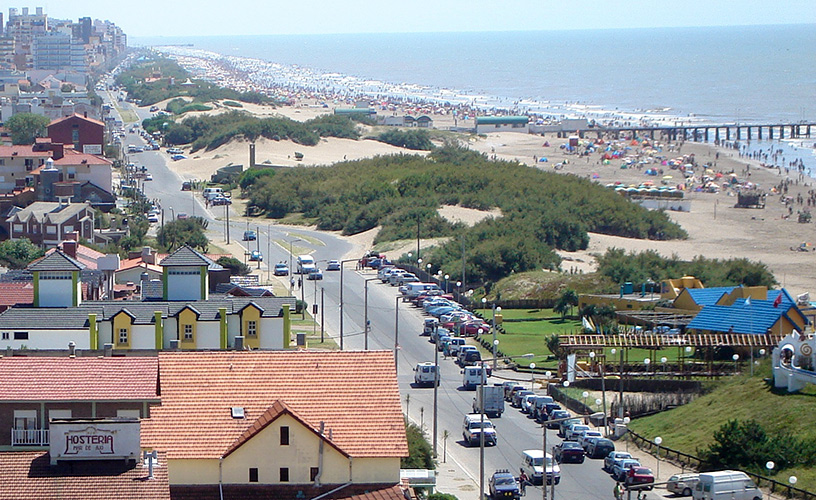

Bienvenidos a nuestros viajes a la Costa Atlántica
Descubre las bellezas que te ofrece la costa atlántica. Ofrecemos viajes en nuestra cómoda combi Ducato con amplio lugar para equipaje y espacio para siete personas. Te llevaremos a los lugares más hermosos de la costa atlántica para que puedas disfrutar de la playa, el sol y el mar. Nuestro equipo está conformado por padre e hijo, el padre como chofer y el hijo como maletero/copiloto, así que te aseguramos un servicio personalizado y de calidad.
Destinos populares
-

Mar del Plata
Mar del Plata es uno de los destinos turísticos más populares de la costa atlántica. Sus playas, su vida nocturna y su cultura hacen de esta ciudad un lugar perfecto para unas vacaciones inolvidables.
-

Villa Gesell
Villa Gesell es una ciudad con una gran oferta de actividades para toda la familia. Además de sus playas, también cuenta con bosques y dunas para recorrer y disfrutar de la naturaleza.
-

Mar de Ajó
Mar de Ajó es una ciudad tranquila y familiar, ideal para unas vacaciones relajantes. Su hermosa rambla frente al mar es perfecta para caminar y disfrutar de la brisa del mar.